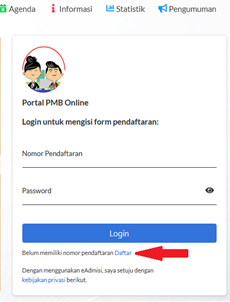

Panduan Ujian Masuk Mandiri 2022/2023 (UMM)
PEDOMAN UMUM
UJIAN MASUK MANDIRI PROGRAM DIPLOMA TIGA DAN ALIH JENJANG (S1) (UMM DIPLOMA DAN ALIH JENJANG)
UNIVERSITAS SULTAN AGENG TIRTAYASA
TAHUN AKADEMIK 2022/2023
PROGRAM STUDI
| DIPLOMA TIGA EKONOMI | : D3 Akuntansi |
|---|---|
| : D3 Perpajakan | |
| : D3 Perbankan dan Keuangan | |
| : D3 Manajemen Pemasaran | |
| DIPLOMA TIGA KEPERAWATAN | : D3 Keperawatan |
| ALIH JENJANG EKONOMI |
: S1 Manajemen |
| : S1 Akuntansi |
PERSYARATAN UMUM PENDAFTARAN
DIPLOMA TIGA KEPERAWATAN:
- Lulusan SMA/MA/ Jurusan IPA, SMK Kesehatan/SMK Farmasi/SMK Analis/SMK Kimia, berijazah, 5 (lima) tahun terakhir 2018, 2019, 2020, 2021, dan 2022
- Bagi lulusan tahun 2022, telah memiliki Surat Keterangan Lulus yang memuat sekurang-kurangnya informasi jati diri, pas foto yang bersangkutan, serta dibubuhi cap yang sah.
- Peserta seleksi dalam kondisi sehat jasmani dan rohani.
- Tinggi badan minimum; Perempuan : 150 cm Laki-laki : 155 cm
- Tidak buta warna, parsial maupun total.
- Pemeriksaan Kesehatan langsung di Lokasi Universitas Sultan Ageng Tirtayasa
DIPLOMA TIGA EKONOMI:
- Lulusan SMA/MA/SMK/atau sederajat dan Paket C, berijazah, 5 (lima) tahun terakhir 2018, 2019, 2020, 2021 dan 2022
- Bagi lulusan Paket C, usia maksimum saat pendaftaran adalah 22 tahun
- Bagi lulusan tahun 2022, telah memiliki Surat Keterangan Lulus yang memuat sekurang-kurangnya informasi jati diri, pas foto yang bersangkutan, serta dibubuhi cap yang sah.
- Peserta seleksi dalam kondisi sehat jasmani dan rohani.
- Bebas Narkoba dari Rumah Sakit Pemerintah / BNN
ALIH JENJANG EKONOMI (HANYA DI GELOMBANG II):
Mahasiswa baru jalur alih jenjang adalah migrasi mahasiswa lulusan D2/D3 dari Perguruan Tinggi asal /lain melalui proses administrasi dan konversi nilai mata kuliah yang sudah ditempuh di Perguruan Tinggi asal.
- Lulusan PTN, angkatan lima tahun terakhir.
- Ijazah D3 dan Transkrip Minimal IPK 2,75.
- Pilihan Program Studi harus Linier.
- Akreditasi BAN PT Asal D3 dari PTN lain, minimal B (baik).
- Biaya konversi setelah diterima adalah Rp 1.000.000,-
- Peserta seleksi dalam kondisi sehat jasmani dan rohani.
- Bebas Narkoba dari Rumah Sakit Pemerintah / BNN
JADUAL PELAKSANAAN
| Keterangan | Gelombang 1 | Gelombang 2 |
|---|---|---|
| Pendaftaran | 25 Maret - 05 Mei 2022 | 17 Mei - 25 Juli 2022 |
| Ujian Masuk | 10 Mei 2022 | 30 Juli 2022 |
| Pengumuman Hasil Ujian | 12 Mei 2022 | 1 Agustus 2022 |
| Pembayaran UKT dan BPIN | 14 - 23 Mei 2022 | 4 - 12 Agustus 2022 |
MATERI UJIAN
| EKONOMI | : Tes Potensi Skolastik (TPS) |
| : Tes Kemampuan Akademik Soshum (TKS) | |
| KEPERAWATAN | : Tes Potensi Skolastik (TPS) |
| : Tes Kemampuan Akademik Saintek (TKS) | |
| ALIH JENJANG | : Tes Potensi Skolastik (TPS) |
| : Tes Kemampuan Akademik Keilmuan (TKAK) |
BIAYA PENDAFTARAN
Pembayaran dilakukan melalui Bank BNI (seluruh cabang)
Diploma Tiga dan Alih Jenjang Ekonomi : Rp 400.000,-
Diploma Tiga Keperawatan : Rp 550.000,-
Membayar Iuran Pengembangan Institusi Negara (IPIN), jika dinyatakan Lulus;
Diploma Tiga Ekonomi : Rp 5.000.000
Diploma Tiga Keperawatan : Rp 10.000.000
Alih Jenjang Ekonomi Fakultas Ekonomi dan Bisnis : Rp 20.000.000
Biaya konversi setelah diterima : Rp 1.000.000,-
BIAYA PENDIDIKAN
- Biaya Uang Kuliah Tunggal (UKT) sesuai dengan Keputusan Rektor Nomor: 379/UN43/KP.TM.01.03/2020 tentang Penetapan Biaya Pendaftaran, Uang Kuliah Tunggal, dan Iuran Pembangunan Institusi Bagi Mahasiswa Baru Program Sarjana Jalur Seleksi Mandiri Masuk Perguruan Tinggi Negeri Wilayah Barat Universitas Sultan Ageng Tirtayasa Tahun Akademik 2022/2023, yaitu:
| No | Kode | Program Studi | K3 | K4 | K5 | K6 |
|---|---|---|---|---|---|---|
| 1. | 5501 | Akuntansi | 3.000.000,- | 4.000.000,- | 5.500.000,- | - |
| 2. | 5502 | Manajemen Pemasaran | 3.000.000,- | 4.000.000,- | 5.500.000,- | - |
| 3. | 5503 | Perpajakan | 3.000.000,- | 4.000.000,- | 5.500.000,- | - |
| 4. | 5504 | Perbankan dan Keungan | 3.000.000,- | 4.000.000,- | 5.500.000,- | - |
| 5. | 8801 | Keperawatan | 6.000.000,- | 6.500.000,- | 7.000.000,- | - |
| 6. | 5551 | Manajemen (S1) | 3.000.000,- | 4.500.000,- | 6.000.000,- | - |
| 7. | 5552 | Akuntansi (S1) | 3.000.000,- | 5.000.000,- | 6.500.000,- | 7.500.000,- |
Biaya yang harus dibayar di awal semester I = Biaya IPIN + UKT. Untuk semester selanjutnya yang dibayar hanya UKT.

TATA CARA PENDAFTARAN
Pendaftaran online dilakukan mulai:
Gelombang 1 : 25 Maret – 29 April 2022, pukul 23.59 WIB
Gelombang 2 : 17 Mei – 25 Juli 2022, pukul 23.59 WIB
Buka laman https://admisi.untirta.ac.id, Klik Daftar pada tanda yang ditunjuk panah merah.

Masukan data yang diminta dan pilihan program studi yang diinginkan. Pastikan data diisi dengan benar (no.HP/email) karena semua data akan mejadi acuan panitia dalam berkomunikasi atu mengirim notifikasi. Satu email hanya bisa dipakai untuk mendaftar satu kali.
Setelah memasukan kode verifikasi dan ceklis konfirmasi kemudian klik Daftar.

Peserta Program studi Diploma Tiga Ekonomi, dapat memilih maksimal dua program studi, sedangkan peserta Ahli Jenjang (S1), hanya diperbolehkan memilih satu jurusan, sesuai dengan linieritas ijazah diplomanya.
Peserta yang berminat memilih Diploma Tiga Keperawatan hanya satu pilihan.
Cetak Bukti Pendaftaran dan tunjukan ke petugas Teler Bank untuk pembayaran, atau bisa melakukan pembayaran dengan salah satu fasilitas Bank cek di sini
contoh :

Nomor Pendaftaran = Nomor Rekening/Nomor Tagihan.
Pembayaran pendaftaran dilakukan untuk mengaktifkan Nomor Pendaftaran (token) dan Password. Untuk Selanjutnya bisa digunakan untuk Login ke https://admisi.untirta.ac.id dan melengkapi data.
Setelah melakukan pembayaran, buka kembali laman https://admisi.untirta.ac.id kemudian pendaftar melakukan Login, dengan menggunakan Nomor Pendaftaran dan Password yang ada pada Bukti Pendaftaran.
Lengkapi Data dengan Benar dan Jujur, berikut dokumen yang harus dilengkapi :
File Pasfoto berwarna terbaru (standar untuk ijazah) dengan wajah menghadap ke depan, ukuran 4x6 cm, berformat *jpg, dengan resolusi maksimum 300pxl x 450pxl, dan ukuran file maksimum 200 kb.
Pakta Integritas Uang Kuliah Tunggal, Jalur UMM D3 dan Alih Jenjang (download, isi, scan, dan upload).
Surat Pernyataan Mentaati Peraturan (download, isi, scan, dan upload).
Ijazah / Surat Keterangan Lulus bagi lulusan tahun 2022 yang belum memperoleh Ijazah. atau Surat Keterangan Kelas XII atau Kartu Peserta Ujian Sekolah (scan, upload)
Akta Kelahiran (scan dan upload).
Kartu Keluarga (scan dan upload).
Bukti pembayaran listrik bagi pelanggang pascabayar atau bukti pembelian token listrik bagi pelanggan prabayar (scan dan upload).
SPPT Pajak Bumi dan Bangunan (PBB) maximal 2 (dua) Tahun terakhir atau Surat Pernyataan tentang Luas Tanah dan Bangunan Rumah yang ditempati bagi yang tidak punya SPPT (download, isi, scan, dan upload).
Untuk Kelompok Ujian Ekonomi dan Alih Jenjang (S1) Wajib Upload Surat Keterangan Sehat, Surat Hasil Test Narkoba dari Rumah Sakit Pemerintah / BNN.
Untuk Kelompok Ujian Keperawatan akan melakukan tes kesehatan di lokasi Tes sesuai jadwal.
Bukti Penghasilan Ayah dan Penghasilan Ibu dengan ketentuan sebagai berikut (scan dan upload):
PNS/TNI/BUMN/Karyawan Swasta : Slip Gaji / Bukti Penghasilan maksimal 2 (dua) bulan terakhir tahun 2022 (terbaru),
Wiraswasta/Petani/Pedagang/Buruh/Tidak Mempunyai Pekerjaan Tetap : Surat Keterangan Penghasilan dari Kelurahan dengan wajib mencantumkan (1) NAMA PEKERJAAN (2) NOMINAL PENGHASILAN/bulan (scan dan upload),
Pensiunan : Rekening Koran atau print out Buku Rekening Pensiun maksimal 2 (dua) bulan terakhir tahun 2022 (terbaru).
Jika Ayah sudah meninggal kolom penghasilan di isi nol. Dokumen yang di upload Surat Kematian.
Jika Ibu ibu Rumah Tangga minta surat keterangan dari RW/Kelurahan
Penghasilan Ayah dan Ibu di isi dengan data sebenarnya dan tidak boleh 0 (nol) semua.
Surat Pernyataan Kebenaran / Keabsahan Data (dowload, isi, scan dan upload)
Pertanyaan / Isian yang bertanda bintang (*) wajib di isi, sedangkan untuk pertanyaan yang tidak ada tanda bintang bisa di isi jika anda mempunyai datanya atau boleh dikosongkan.
Jadwal Ujian Tulis Berbasis Komputer (UTBK) Gelombang 2
| Hari dan Tanggal | Kegiatan | Waktu (WIB) | Kelompok Ujian |
|---|---|---|---|
| Gelombang 2 SABTU, 30 Juli 2022 |
Peserta masuk ruang ujian | 08.25 - 08.30 | (1) Ekonomi (2) Keperawatan (3) Alih Jenjang (S1) |
| Pemeriksaan identitas dan dokumen | 08.30 - 08.40 | ||
| Latihan | 08.40 - 08.45 | ||
| Tes Potensi Skolastik (TPS) | 08.45 - 10.30 | ||
| Tes Kemampuan Akademik (TKA) Saintek/Soshum | 10.30 - 12.00 | ||
| Tes Kesehatan (Kampus Kepandean) | 12.30 - selesai | Khusus Keperawatan |
Peserta wajib hadir di lokasi ujian, 60 menit sebelum ujian dilaksanakan.
TATA TERTIB UTBK
Berikut Tata Tertib pada saat pelaksanaan Ujian Tulis Berbasis Komputer untuk Diploma Tiga dan Alih Jenjang. https://link.untirta.ac.id/TATATERTIB
PENGUMUMAN KELULUSAN
- Calon mahasiswa baru dapat melihat Pengumuman Kelulusan melalui web https://admisi.untirta.ac.id pada tab Pengumuman, atau bisa cek SK nya di web https://untirta.ac.id

Besaran UKT dapat dilihat dengan cara lgin kembali menggunakan nomor pendaftaran dan password saat pendaftaran, sesuai jadwal pembayaran.
EMPAT (4) CARA MEMBAYAR UKT DI UNTIRTA MELALUI BANK BNI : https://link.untirta.ac.id/UKTuntirta
LAIN - LAIN
Helpdesk pendaftaran di Gedung Pusdainfo Lantai 1, Universitas Sultan Ageng Tirtayasa. Telpon; 0817738817; 081911106670
Hotline Registrasi/Admisi : https://wa.me/6281311734542
Email: pmb@untirta.ac.id dan humas@untirta.ac.id
Ketentuan Khusus
- Calon mahasiswa baru yang tidak dapat memenuhi persyaratan registrasi administrasi sebagaimana yang ditetapkan dinyatakan GUGUR.
- Biaya UKT dan IPIn yang telah dibayarkan sesuai dengan besaran yang telah ditetapkan, tidak dapat dikembalikan sesuai dengan Pakta Integritas yang sudah disetujui diatas materai.